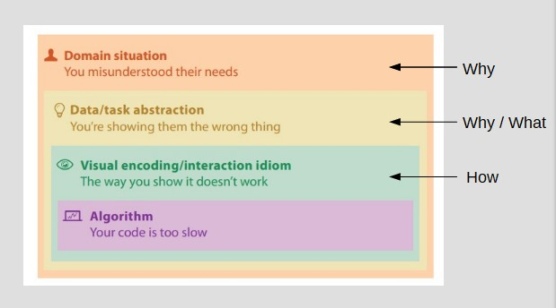
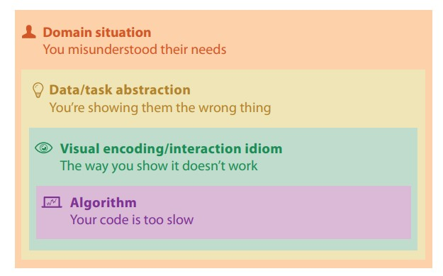
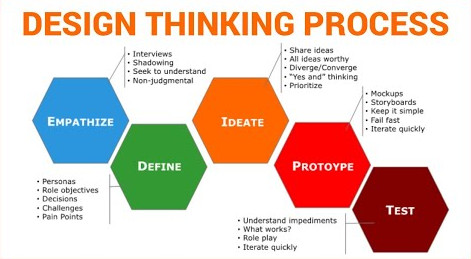
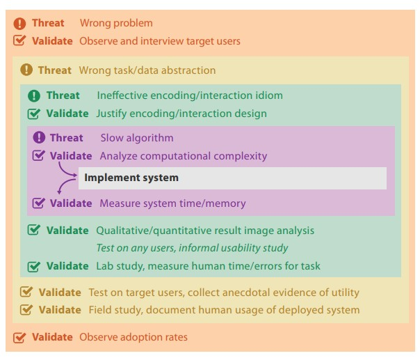

4a: Viz analysis
4 levels of validation
4 levels of validation: A framework
Domain - Data - Idiom - Tech
Visualization Analysis and Design, chapter 4, Munzner
Threats to validity
- Wrong problem: You've misunderstood the needs
- Wrong abstraction: You're showing the wrong thing.
- Wrong idiom: The way you show doesn't work
- Wrong algorithm: The code is too slow
Domain
Knowledge of an area that lets you frame problems from a human-centric interaction (HCI) design perspective.
This is similar to UX design thinking, especially the needfinding / problem definition portions.
In short, questions to validate why we are tackling the problems from the domain itself (Empathize and Define).
Nielson Normal Group, adapted from Standford school of design thinking
UX design thinking tools
Tools to help with user empathy / problem specification / prioritization
- Needfinding tools: Observations, interviews, surveys
- Personas: User audience
- Task analysis: Flowcharts and lists
- User stories: End user informal description of feature sets
- Mindmaps: Clustering needs and prioritization
Data / task abstraction
What is the data like? Why are we doing the visualization?
i.e. Understanding the problem and the datasets.
Visual encoding / interaction
How are we designing the visualization?
i.e. Exploring how to best tackle the task - ideating and prototyping
Algorithmn / Technology
Execution of the visualization.
What technology stack are you using? Web? Desktop?
Are you using any 3rd party platform? Frontend stack? Backend stack?
i.e. Materializing the visualization
Top-down or bottom up?
Typically either:
- Designing a viz to solve a problem (top down)
- Refining an existing solution (bottom-up)
Validation approaches
Validation approaches
Very similar to how UX design thinking is iterated upon in a project.
More UX design thinking tools
Tools to help with user evaluation / testing
- "Think aloud" usability evaluation
- Heuristic checklist (e.g. 10 usability heuristics, Jakcob Nielson)
- Shneiderman’s Eight Golden Rules
Case studies
Stories and experiences
Domain case studies
Maritime Maps / Transport Rail / Real Estate
Data case studies
Cybersecurity / Covid
Idiom case studies
Area to Boxplot / Event visualization
Tech case studies
Fashion start-up / Geospatial start-up
Project walkthrough
Covid network graphs
Questions?
Chi-Loong | V/R